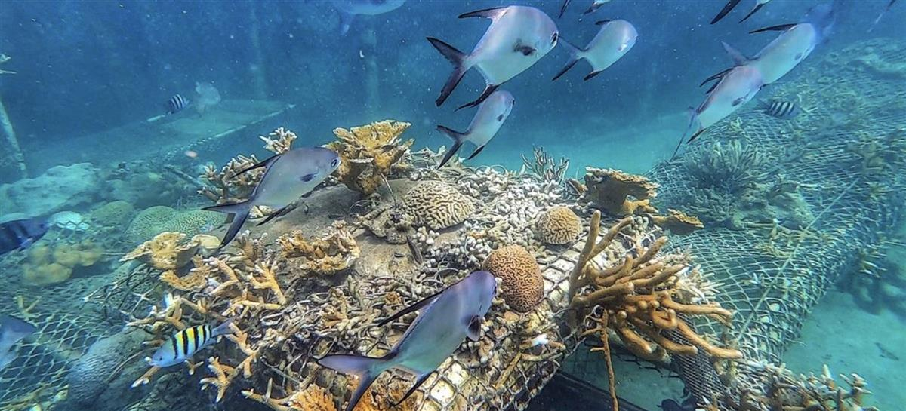
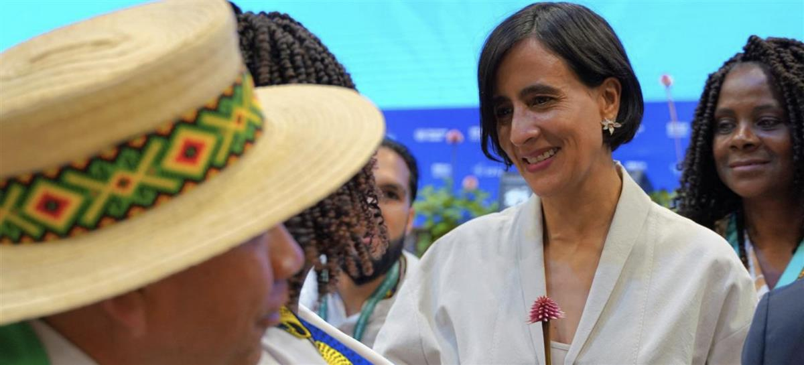

Unsplash/James Wainscoat ; Close-up of a hummingbird near flower.
ON SOURCE: UN News - Global perspective Human stories
UN News: Global perspective Human stories
The latest UN biodiversity summit opens in Colombia; here’s what’s at stake
21 October 2024 Climate and Environment
The UN biodiversity summit known as COP16 officially opened in Colombia on Monday, and hopes are high that negotiating countries can agree on a path forward to safeguarding the planet.
Considered the world’s most important event to conserve biodiversity, the summit is taking place in Cali, the third largest city of the South American nation, and will host some 15,000 attendees, including a dozen heads of State, 103 ministers and over 1,000 international journalists.
Aiming to promote international cooperation, agree on investments to protect ecosystems and strengthen global environmental policies, COP16 takes as its roadmap the Kunming-Montreal Biodiversity Framework (GBF), a landmark plan to halt and reverse the loss of biodiversity for 2030, adopted at COP15 in Canada.
What is ‘biodiversity’?
The UN Convention on Biological Diversity (CBD) describes biodiversity as “the diversity within species, between species and of ecosystems, including plants, animals, bacteria, and fungi”. These three work together to create life on Earth, in all its complexity.
The diversity of species keeps the global ecosystem in balance, providing everything in nature that we, as humans, need to survive, including food, clean water, medicine and shelter. Biodiversity is also our strongest natural defence against climate change. Land and ocean ecosystems act as “carbon sinks”, absorbing more than half of all carbon emissions.
Delegates at COP16, formally the 16th Conference of Parties to the UN Biodiversity Convention, will discuss how to restore rapidly degrading lands and seas in a way that protects the planet and respects the rights of indigenous peoples and local communities.
A key goal will be to fully implement the so-called ‘30 by 30’ Kunming-Montreal pledge to protect 30 per cent of the planet’s lands and inland waters, as well as of marine and coastal areas, by 2030.
‘Postcard landscapes’ inspire action
Marking the first global gathering on the vital issue of biodiversity since 2022, when countries agreed on the historic framework, COP16 will run until 1 November in Cali, the capital of Valle del Cauca. This area is surrounded by the magical sounds of the jungle, purifying streams, intensely green mountains and the strength of the Pacific Ocean in the northwest of the country.

UN News/Laura Quiñones : Fish swim over coral nurseries in Corales del Rosario National Park, Colombia.Colombia’s Pacific region is marked by landscapes that could be printed on postcards to commemorate their beauty. Colombia is considered one of the most biodiverse countries in the world with 311 types of continental and marine ecosystems per square kilometers.
Home to more than one thousand species of birds, four thousand species of orchids, and with 53 per cent of its territory covered by forests, Colombia’s selection as COP16 host highlights the importance of the region in the global biodiversity agenda and the fundamental role it plays in the protection of ecosystems.
Biodiversity Plan
During the summit’s opening ceremony on Sunday, Secretary-General António Guterres urged delegations from some 190 countries to “make peace with nature” and shore up plans to stop habitat loss, save endangered species, and preserve our planet’s precious ecosystems.
The UN chief’s call came in a video message to the opening ceremony of the gathering. The Secretary-General said: “the framework is grounded in a clear truth – for humanity to survive, nature must flourish...it promises to reset relations with Earth and its ecosystems.”
Mr. Guterres underscored that delegations must leave Cali with significant investments in the GBF, its related funds and commitments to mobilize other sources of public and private finance to deliver on its goals in full.
“We have a plan to rescue humanity from a degraded Earth,” the Secretary-General said, and added that he looked forward to seeing delegates in person at the end of the COP “to hear how you have delivered.”
Colombia, ‘epicentre of global climate action’
The Minister of Environment in Colombia, and President of COP16, Susana Muhamad, highlighted that “Colombia has become the epicentre of global climate action, uniting leaders and experts to address the greatest challenge of our era: protecting our planet and ensure a sustainable future”.
“Understanding that if we safeguard all forms of life, we are safeguarding ourselves, we erect a principle of peace with nature, which also means the search for peace among the villages”, she added, while the blue flag of the United Nations waved where the meeting is taking place.

UN Biodiversity : Susana Muhamad, Minister of Environment of Colombia and President of the UN Biodiversity Conference (COP16).National action plans
Colombia’s former environmental minister, Manuel Rodríguez Becerra, told UN News that one of the main challenges is to ensure that countries make more significant progress on their action plans.
“Only 20 per cent of countries have presented these national plans two years [after] COP15, where this global framework was agreed. We hope that, during COP16 in Cali, many countries will present their national plans or will be very ready. There is still a fallacy that we must recognize and that is why it is so important that progress is made in the monitoring system to follow through on achieving the goals that have been set”, he said.
“In relation to finance, we must begin to fill the gap with the current resources, which are 200,000 million dollars compared to the 700,000 million dollars that are required,” concluded the expert.
The 16th Conference of the Parties of the Convention on the Biological Diversity of the United Nations is considered the most important event that has occurred in Colombia in the last 50 years.
Doctor David Cooper, Acting Executive Chief of the Secretariat of the UN Convention on Biological Diversity
Learn more about biodiversity
- Biodiversity Explainer: Biodiversity: What is it and how can we protect it? | UN News
- The Convention on Biological Diversity:The Convention on Biological Diversity (cbd.int)
- COP16: Convention on Biological Diversity (cbd.int)
- UNDP Climate Dictionary:The Climate Dictionary: Nature Edition | Climate Promise (undp.org)
ON SOURCE: UN News - Global perspective Human stories